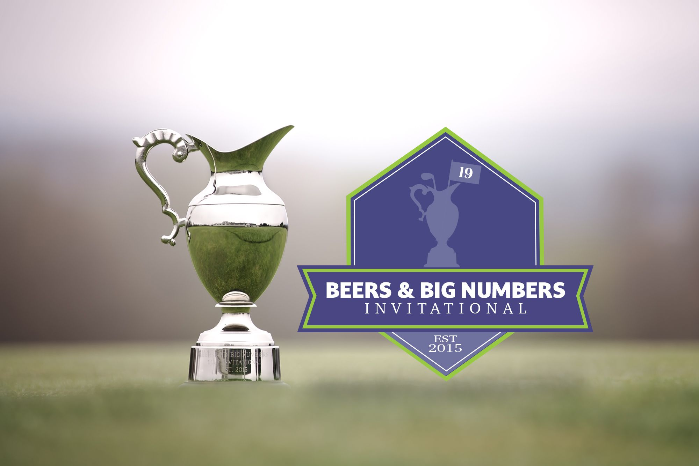
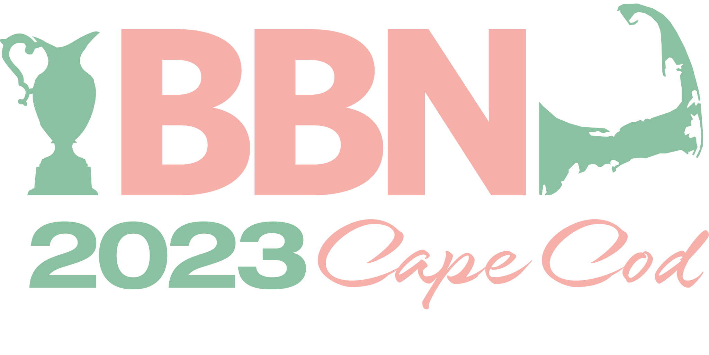
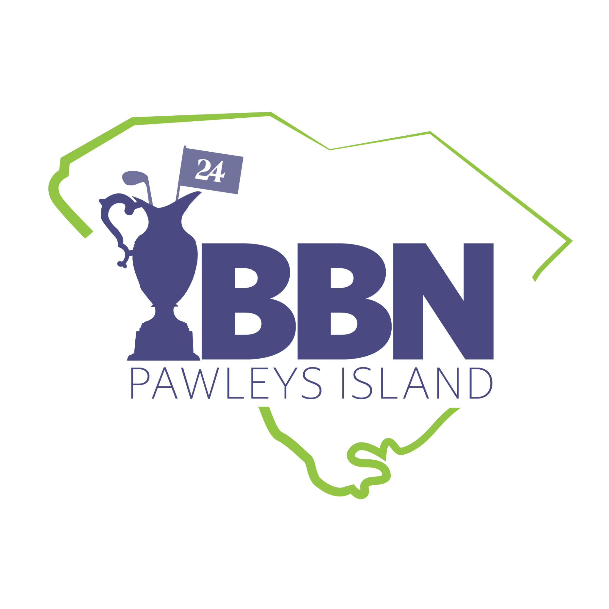
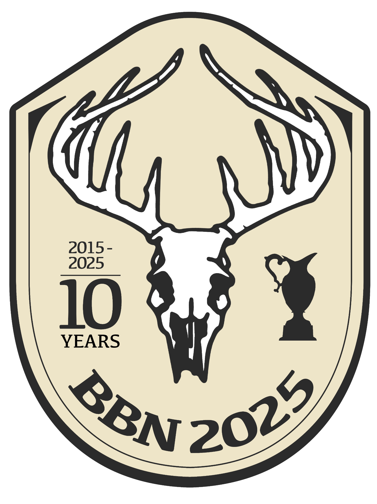
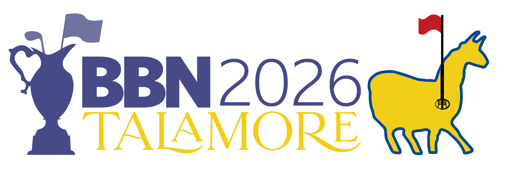

A bunch of years back, a few friends and I started an annual guys’ golf trip. Once we realized it was going to become a yearly tradition, we made it official: gave it a name—the Beers & Big Numbers Invitational (BBN)—bought a trophy for the winners to take home, and created a simple logo.
With BBN approaching its 10th anniversary, I decided it was time to up our game. What started as a logo refresh evolved into a flexible design system built around the BBN identity, with each year’s logo taking on characteristics inspired by the location and personality of that year’s trip.
Role: Concept, Art Direction, Illustration & Design

Each year, the BBN identity evolves to reflect the location, character and story of the trip while maintaining a connection to the tournament’s core visual system.



